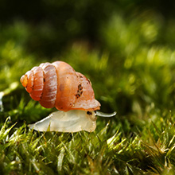

高大追追追

他最懂蝸牛 生科系助理教授黃重期
國立高雄大學生命科學系助理教授黃重期熱愛蝸牛，研究已超過15載，教學課餘經常往野外...這位老外愛去墓仔埔 台灣墳墓研究
這位德籍老外愛去「墓仔埔」！國立高雄大學西洋語文學系副教授奧利華（Oliver Streiter）熱衷研究台灣墳墓...運健休系副教授莊淑姿開設「休閒農場經營管理與實務」
國立高雄大學運動健康與休閒學系副教授莊淑姿這學期開設「休閒農場經營管理與實務」，修課學生不能光在教室吹冷氣上課...最新公告
活動資訊
>> 更多公告
「新聞教父」鄭貞銘 出席卓越講座 談育才
期中考周開始